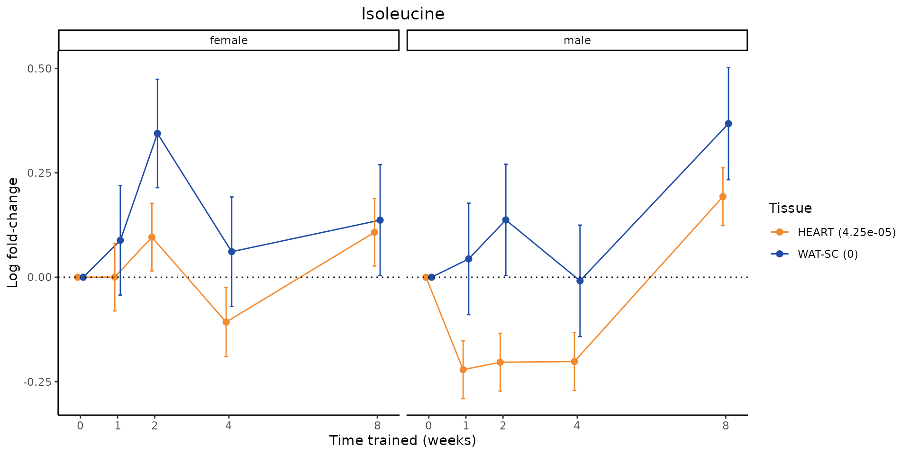
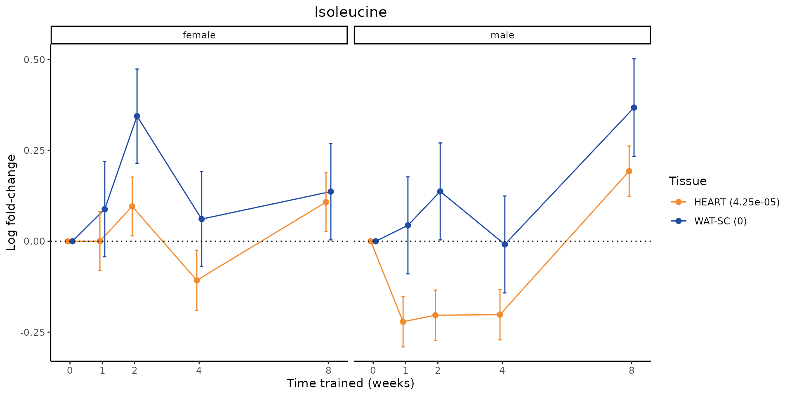
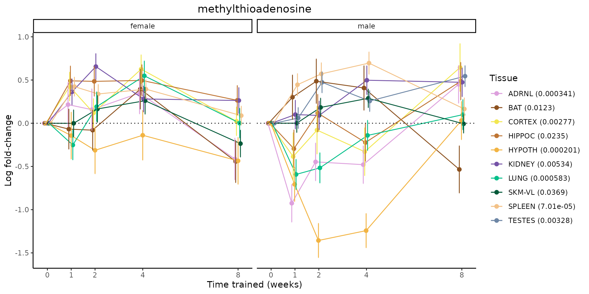
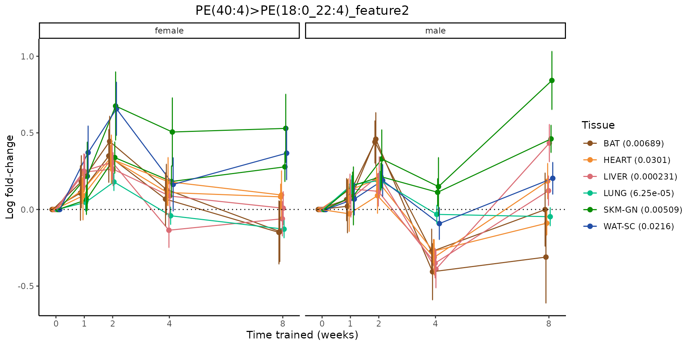
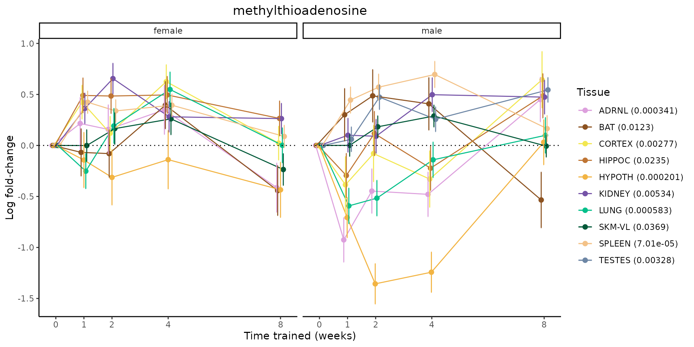
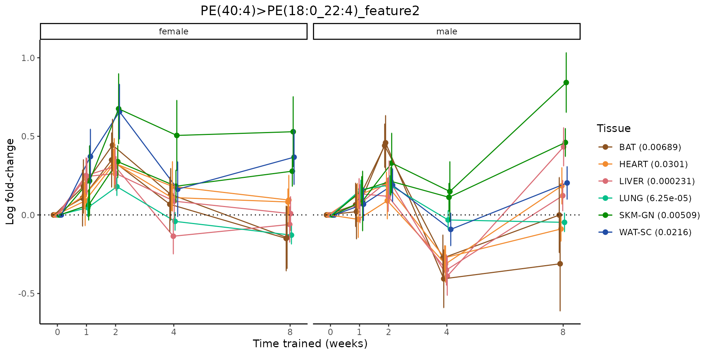

Motivation
This report was motivated by this reviewer comment:
Reviewer 1: Given the extensive collection of metabolomics data (targeted and untargeted) for so many tissues and temporal timepoints (Figure 1C) it will be interesting to explore the changes of several key cellular metabolites in addition to the KEGG pathways. For example, it will be interesting to see sex- and time-specific changes in the plasma, muscles, heart of such metabolites as glucose, pyruvate, lactate, acetate, perhaps key intermediates of glycolysis and the TCA cycle. If the data is available, it will be also interesting to characterize the changes in the energy and redox ratios, i.e. ATP/ADP, NADH/NAD+ (or individual concentrations, such as ATP). Given the central roles of these metabolites in cellular physiology/health and multiple changes in the corresponding metabolic pathways (Figure 7), it will be good to present and discuss the observed metabolic changes.
library(MotrpacRatTraining6mo)
library(data.table)
library(ggplot2)
knitr::opts_chunk$set(echo = TRUE, message = FALSE, warning = FALSE)Metabolites manually selected for biological relevance
First, let’s look at metabolites selected for physiological relevance in the plasma, liver, and skeletal muscle. Just for this section, we will plot the metabolites whether or not they are training-regulated. For each metabolite, the trajectory of the normalized sample-level data is shown on the left, and the log fold-changes from the timewise differential analysis are shown on the right. Multiple traces are shown if multiple platforms measured the metabolite.
meta = data.table(METAB_FEATURE_ID_MAP)
features = c()
for(m in c("AMP","ADP","ATP","NAD+","NADH","Glucose","Pyruvic acid","Lactic acid","Oxaloacetic acid","Citric acid","Succinic acid","acetate")){
# message(m)
sub = meta[grepl(sprintf("^%s$",gsub("\\+","\\\\+",m)), metabolite_name, ignore.case = TRUE) |
grepl(sprintf("^%s$",gsub("\\+","\\\\+",m)), metabolite_refmet, ignore.case = TRUE)]
# sub = meta[grepl(m, metabolite_name) | grepl(m, metabolite_refmet)]
# print(sub[,metabolite_refmet])
if(nrow(sub) == 0){
warning(sprintf("%s not found", m))
next
}
features = c(features, m)
}
#> Warning: acetate not found
for(f in features){
for(TISSUE in c("LIVER","SKM-GN","SKM-VL","PLASMA")){
# sample-level data
p = plot_feature_normalized_data(feature_ID=f,
assay="METAB",
tissue=TISSUE,
add_adj_p=TRUE,
facet_by_sex=TRUE)
if(!is.null(p)){
print(p)
}else{
next
}
# log fold-changes
p = plot_feature_logfc(feature_ID=f,
assay="METAB",
tissue=TISSUE,
facet_by_sex=TRUE)
if(!is.null(p)){
print(p)
}
}
}


Meaningful ratios
Let’s also plot some meaningful ratios. Here, we calculate the ratio of the normalized sample-level data for two metabolites in matched tissue samples. The y-axis then presents the average ratio across samples within a given sex and training time point, where error bars are standard deviation.
my_plot_feature_normalized_data = function(assay = NULL,
tissue = NULL,
feature_ID = NULL,
feature = NULL,
title = NULL,
add_gene_symbol = FALSE,
facet_by_sex = FALSE,
scale_x_by_time = TRUE,
return_data = FALSE,
exclude_outliers = TRUE,
add_adj_p = FALSE){
curr_feature = feature
if(is.null(curr_feature) & any(is.null(c(assay, tissue, feature_ID)))){
stop("If 'feature' is not specified, 'assay', 'tissue', and 'feature_ID' must all be specified.")
}
# for metabolites, accommodate RefMet IDs
if(is.null(curr_feature)){
original_feature_ID = feature_ID
if(assay == "METAB"){
# check if feature_ID is valid
m = data.table(MotrpacRatTraining6moData::METAB_FEATURE_ID_MAP)
if(!feature_ID %in% m[,feature_ID_sample_data]){
# is it a RefMet ID?
if(feature_ID %in% m[,metabolite_refmet]){
# get feature_ID used in data
feature_ID = unique(m[metabolite_refmet == feature_ID, feature_ID_sample_data])[1]
}else{
stop(sprintf("Feature ID '%s' not found in METAB data. See METAB_FEATURE_ID_MAP for measured metabolites.", feature_ID))
}
}
}
curr_feature = sprintf("%s;%s;%s", assay, tissue, feature_ID)
}
if(is.null(tissue)){
splits = unname(unlist(strsplit(curr_feature, ";")))
assay = splits[1]
tissue = splits[2]
feature_ID = splits[3]
original_feature_ID = feature_ID
}
FEATURE_ID = feature_ID
ASSAY = assay
TISSUE = tissue
FEATURE = curr_feature
redundant_feature = FEATURE
differential = TRUE
training_reg = data.table::as.data.table(MotrpacRatTraining6moData::TRAINING_REGULATED_FEATURES)
keep_looking = TRUE
while (keep_looking) {
if (FEATURE %in% training_reg[, feature])
break
differential = FALSE
if (!ASSAY %in% c("METAB", "IMMUNO"))
break
if (FEATURE %in% MotrpacRatTraining6moData::REPEATED_FEATURES$feature) {
FEATURE = MotrpacRatTraining6moData::REPEATED_FEATURES$new_feature[MotrpacRatTraining6moData::REPEATED_FEATURES$feature ==
FEATURE]
differential = TRUE
FEATURE_ID = MotrpacRatTraining6moData::REPEATED_FEATURES$feature_ID[MotrpacRatTraining6moData::REPEATED_FEATURES$new_feature ==
FEATURE[1]]
break
}
if (!ASSAY == "METAB")
break
new_feature_id = unique(MotrpacRatTraining6moData::METAB_FEATURE_ID_MAP$feature_ID_metareg[MotrpacRatTraining6moData::METAB_FEATURE_ID_MAP$metabolite_name ==
FEATURE_ID])
new_feature_id = unique(new_feature_id[new_feature_id %in%
training_reg[assay == ASSAY & tissue == TISSUE, feature_ID]])
if (length(new_feature_id) == 0)
break
FEATURE = unique(training_reg[feature_ID == new_feature_id &
tissue == TISSUE & assay == ASSAY, feature])
if (length(FEATURE) == 0)
break
differential = TRUE
keep_looking = FALSE
}
if (differential) {
if (exclude_outliers) {
all_sample_level_data = data.table::as.data.table(MotrpacRatTraining6moData::TRAINING_REGULATED_NORM_DATA_NO_OUTLIERS)
}
else {
all_sample_level_data = data.table::as.data.table(MotrpacRatTraining6moData::TRAINING_REGULATED_NORM_DATA)
}
sample_level_data = all_sample_level_data[feature %in%
FEATURE]
} else {
message(sprintf("'%s' is not a training-regulated feature. Looking in all sample-level data.",
FEATURE))
all_sample_level_data = data.table::as.data.table(load_sample_data(TISSUE,
ASSAY, exclude_outliers = exclude_outliers))
if (nrow(all_sample_level_data) == 0) {
warning(sprintf("Sample-level data for %s %s not found.",
ASSAY, TISSUE))
return()
}
if (!FEATURE_ID %in% all_sample_level_data[, feature_ID]) {
warning(sprintf("'%s' not found in the %s %s sample-level data.",
FEATURE_ID, ASSAY, TISSUE))
return()
}
sample_level_data = all_sample_level_data[feature_ID ==
FEATURE_ID]
sample_level_data[is.na(feature), `:=`(feature, FEATURE)]
}
multiple_measurements = FALSE
if (nrow(sample_level_data) > 1) {
warning(sprintf("Multiple features correspond to '%s'. Plotting them together.",
redundant_feature))
sample_level_data[, `:=`(feature, dataset)]
multiple_measurements = TRUE
}
if (add_gene_symbol) {
if (ASSAY %in% c("METHYL", "ATAC") & !differential) {
feature_to_gene = data.table::data.table(MotrpacRatTraining6moData::FEATURE_TO_GENE)
}
else {
feature_to_gene = data.table::data.table(MotrpacRatTraining6moData::FEATURE_TO_GENE_FILT)
}
gene_symbol = feature_to_gene[feature_ID == FEATURE_ID,
gene_symbol][1]
}
if (is.null(title)) {
if (add_gene_symbol) {
title = sprintf("%s (%s)", redundant_feature, gene_symbol)
}
else {
title = redundant_feature
}
} else {
if (add_gene_symbol) {
title = sprintf("%s (%s)", title, gene_symbol)
}
}
value_cols = colnames(sample_level_data)[grepl("^[0-9]",
colnames(sample_level_data))]
melted_subset = data.table::melt(sample_level_data, id.vars = c("feature"),
measure.vars = value_cols, variable.name = "sample")
melted_subset = melted_subset[!is.na(value)]
melted_subset[, `:=`(sample, as.character(sample))]
meta = unique(data.table::as.data.table(MotrpacRatTraining6moData::PHENO[,
c("group", "sex", "pid", "viallabel")]))
meta[, `:=`(pid, as.character(pid))]
if (all(melted_subset[, sample] %in% meta[, viallabel])) {
col = "viallabel"
} else if (all(melted_subset[, sample] %in% meta[, pid])) {
col = "pid"
meta[, `:=`(viallabel, NULL)]
meta = unique(meta)
} else {
stop(sprintf("Sample names in sample-level data do not correspond to vial labels or PIDs: %s...",
paste(utils::head(melted_subset[, sample]), collapse = ", ")))
}
subset_meta = merge(melted_subset, meta, by.x = "sample",
by.y = col)
bygroup = subset_meta[, list(expr = mean(value, na.rm = T),
sd = sd(value, na.rm = T)), by = .(sex, group, feature)]
if (add_adj_p) {
adj_p_value = NULL
message("Adding differential analysis p-value...")
da = plot_feature_logfc(assay = ASSAY, tissue = TISSUE,
feature_ID = feature_ID, add_adj_p = TRUE, return_data = TRUE)
if (!is.null(da)) {
adj_p_value = min(unique(da$selection_fdr), na.rm = TRUE)
}
}
if (return_data) {
subset_meta[,selection_fdr := adj_p_value]
bygroup[,selection_fdr := adj_p_value]
return(list(by_sample = as.data.frame(subset_meta),
by_group = as.data.frame(bygroup)))
}
bygroup[, `:=`(plot_group, sprintf("%s_%s", feature, sex))]
if (multiple_measurements) {
if (!facet_by_sex) {
g = ggplot2::ggplot(bygroup, ggplot2::aes(x = group,
y = expr, group = plot_group, colour = sex)) +
ggplot2::geom_line(position = ggplot2::position_dodge(width = 0.3)) +
ggplot2::geom_point(size = 2, aes(shape = feature),
position = ggplot2::position_dodge(width = 0.3)) +
ggplot2::geom_errorbar(ggplot2::aes(ymin = expr -
sd, ymax = expr + sd), width = 0.2, position = ggplot2::position_dodge(width = 0.3)) +
ggplot2::theme_classic() + ggplot2::scale_colour_manual(values = c(female = MotrpacRatTraining6moData::SEX_COLORS[["F"]],
male = MotrpacRatTraining6moData::SEX_COLORS[["M"]])) +
ggplot2::labs(x = "Time trained (weeks)", y = "Normalized value",
title = title) + ggplot2::theme(plot.title = ggplot2::element_text(hjust = 0.5,
size = 11), legend.title = ggplot2::element_blank(),
plot.subtitle = ggplot2::element_text(hjust = 0.5),
legend.position = "top", panel.grid.major = ggplot2::element_blank(),
panel.grid.minor = ggplot2::element_blank(),
legend.margin = ggplot2::margin(t = -5, b = -5,
unit = "pt"), legend.spacing.y = ggplot2::unit(0,
"pt"))
} else {
g = ggplot2::ggplot(bygroup, ggplot2::aes(x = group,
y = expr, group = plot_group)) + ggplot2::geom_line(colour = MotrpacRatTraining6moData::TISSUE_COLORS[[TISSUE]],
position = ggplot2::position_dodge(width = 0.3)) +
ggplot2::geom_point(colour = MotrpacRatTraining6moData::TISSUE_COLORS[[TISSUE]],
aes(shape = feature), position = ggplot2::position_dodge(width = 0.3),
size = 2) + ggplot2::geom_errorbar(aes(ymin = expr -
sd, ymax = expr + sd), width = 0.2, colour = MotrpacRatTraining6moData::TISSUE_COLORS[[TISSUE]],
position = ggplot2::position_dodge(width = 0.3)) +
ggplot2::theme_classic() + ggplot2::labs(x = "Time trained (weeks)",
y = "Normalized value", title = title) + ggplot2::theme(plot.title = ggplot2::element_text(hjust = 0.5,
size = 11), legend.title = ggplot2::element_blank(),
plot.subtitle = ggplot2::element_text(hjust = 0.5),
legend.position = "top", panel.grid.major = ggplot2::element_blank(),
panel.grid.minor = ggplot2::element_blank(),
legend.margin = ggplot2::margin(t = -5, b = -5,
unit = "pt")) + ggplot2::facet_wrap(~sex)
}
}
else {
if (!facet_by_sex) {
g = ggplot2::ggplot(bygroup, ggplot2::aes(x = group,
y = expr, group = plot_group, colour = sex)) +
ggplot2::geom_line(position = ggplot2::position_dodge(width = 0.3)) +
ggplot2::geom_point(position = ggplot2::position_dodge(width = 0.3)) +
ggplot2::geom_errorbar(ggplot2::aes(ymin = expr -
sd, ymax = expr + sd), width = 0.2, position = ggplot2::position_dodge(width = 0.3)) +
ggplot2::theme_classic() + ggplot2::scale_colour_manual(values = c(female = MotrpacRatTraining6moData::SEX_COLORS[["F"]],
male = MotrpacRatTraining6moData::SEX_COLORS[["M"]])) +
ggplot2::labs(x = "Time trained (weeks)", y = "Normalized value",
title = title) + ggplot2::theme(plot.title = ggplot2::element_text(hjust = 0.5,
size = 11), legend.title = ggplot2::element_blank(),
plot.subtitle = ggplot2::element_text(hjust = 0.5),
legend.position = "top", panel.grid.major = ggplot2::element_blank(),
panel.grid.minor = ggplot2::element_blank(),
legend.margin = ggplot2::margin(t = -5, b = -5,
unit = "pt"), legend.spacing.y = ggplot2::unit(0,
"pt"))
}
else {
g = ggplot2::ggplot(bygroup, ggplot2::aes(x = group,
y = expr, group = plot_group)) + ggplot2::geom_line(colour = MotrpacRatTraining6moData::TISSUE_COLORS[[TISSUE]]) +
ggplot2::geom_point(colour = MotrpacRatTraining6moData::TISSUE_COLORS[[TISSUE]]) +
ggplot2::geom_errorbar(aes(ymin = expr - sd,
ymax = expr + sd), width = 0.2, colour = MotrpacRatTraining6moData::TISSUE_COLORS[[TISSUE]]) +
ggplot2::theme_classic() + ggplot2::labs(x = "Time trained (weeks)",
y = "Normalized value", title = title) + ggplot2::theme(plot.title = ggplot2::element_text(hjust = 0.5,
size = 11), legend.title = ggplot2::element_blank(),
plot.subtitle = ggplot2::element_text(hjust = 0.5),
legend.position = "none", panel.grid.major = ggplot2::element_blank(),
panel.grid.minor = ggplot2::element_blank()) +
ggplot2::facet_wrap(~sex)
}
}
if (scale_x_by_time) {
g = g + scale_x_discrete(limits = c("control", "1w",
"2w", "fill", "4w", rep("fill", 3), "8w"), labels = c("0",
"1", "2", "4", "8"), breaks = c("control", "1w",
"2w", "4w", "8w"))
}
else {
g = g + scale_x_discrete(limits = c("control", "1w",
"2w", "4w", "8w"), labels = c("0", "1", "2", "4",
"8"), breaks = c("control", "1w", "2w", "4w", "8w"))
}
if (add_adj_p & !is.null(adj_p_value)) {
subtitle = sprintf("adj. p-value: %s", signif(adj_p_value, digits = 2))
g = g + labs(subtitle = subtitle)
}
return(g)
}NAD+/NADH
# get all sample-level data
features = c("NADH","NAD+")
for(tissue in c("LIVER","SKM-GN","SKM-VL","PLASMA")){
subdat = list()
for(feat in features){
dat = my_plot_feature_normalized_data(feature_ID=feat,
tissue=tissue,
assay="METAB",
add_adj_p = TRUE,
return_data = TRUE)$by_sample
if(is.null(dat)) next
dat$feature_ID = feat
dat$tissue = tissue
subdat[[feat]] = dat
}
# add ratio
if(length(subdat) < 2) next
merged = merge(subdat[[1]], subdat[[2]], by=c("sex","group","sample","tissue","feature"),
suffixes = paste0("_", names(subdat)))
merged$NAD_NADH = merged$`value_NAD+`/merged$value_NADH
merged = data.table(merged)
by_group = merged[,list(NAD_NADH = mean(NAD_NADH),
NAD_NADH_sd = sd(NAD_NADH)),
by=.(sex, group, feature, tissue)]
by_group[,plotting_group := feature]
for(platform in unique(by_group[,feature])){
data_df = data.frame(by_group[feature == platform])
g = ggplot2::ggplot(data_df, ggplot2::aes(y=NAD_NADH, x=group, group=plotting_group, color=tissue)) +
ggplot2::geom_point(size=2, position=ggplot2::position_dodge(width=0.3)) +
ggplot2::geom_line(position=ggplot2::position_dodge(width=0.3)) +
ggplot2::geom_errorbar(ggplot2::aes(ymin=NAD_NADH-NAD_NADH_sd, ymax=NAD_NADH+NAD_NADH_sd),
width=0.2,
position=ggplot2::position_dodge(width=0.3)) +
ggplot2::theme_classic() +
ggplot2::geom_hline(yintercept = 0,linetype="dotted") +
ggplot2::facet_wrap(~sex) +
ggplot2::labs(title=sprintf("%s NAD+/NADH", tissue), x="Time trained (weeks)", y="Ratio") +
ggplot2::theme(plot.title = ggplot2::element_text(hjust=0.5),
plot.subtitle = ggplot2::element_text(hjust=0.5),
panel.grid.major = ggplot2::element_blank(),
panel.grid.minor = ggplot2::element_blank()) +
ggplot2::scale_colour_manual(values=TISSUE_COLORS[names(TISSUE_COLORS) %in% by_group[,tissue]],
name="Tissue", guide="none") +
scale_x_discrete(limits=c('control','1w','2w','fill','4w',rep('fill',3), '8w'),
labels=c('0','1','2','4','8'),
breaks=c('control','1w','2w','4w','8w'))
if(length(unique(by_group[,feature])) > 1){
g = g + labs(subtitle=sprintf("Measured by %s",platform))
}
print(g)
}
}Lactate/pyruvate
# get all sample-level data
features = c("Lactic acid","Pyruvic acid")
for(tissue in c("LIVER","SKM-GN","SKM-VL","PLASMA")){
subdat = list()
for(feat in features){
dat = my_plot_feature_normalized_data(feature_ID=feat,
tissue=tissue,
assay="METAB",
add_adj_p = TRUE,
return_data = TRUE)$by_sample
if(is.null(dat)) next
dat$feature_ID = feat
dat$tissue = tissue
subdat[[feat]] = dat
}
# add ratio
if(length(subdat) < 2) next
merged = merge(subdat[[1]], subdat[[2]], by=c("sex","group","sample","tissue"),
suffixes = paste0("_", names(subdat)))
merged$lactate_pyruvate = merged$`value_Lactic acid`/merged$`value_Pyruvic acid`
merged = data.table(merged)
# lactate is measured on a single platform, but pyruvate is only measured on one
by_group = merged[,list(lactate_pyruvate = mean(lactate_pyruvate),
lactate_pyruvate_sd = sd(lactate_pyruvate)),
by=.(sex, group, `feature_Lactic acid`, tissue)]
by_group[,plotting_group := `feature_Lactic acid`]
for(platform in unique(by_group[,plotting_group])){
data_df = data.frame(by_group[plotting_group == platform])
g = ggplot2::ggplot(data_df, ggplot2::aes(y=lactate_pyruvate, x=group, group=plotting_group, color=tissue)) +
ggplot2::geom_point(size=2, position=ggplot2::position_dodge(width=0.3)) +
ggplot2::geom_line(position=ggplot2::position_dodge(width=0.3)) +
ggplot2::geom_errorbar(ggplot2::aes(ymin=lactate_pyruvate-lactate_pyruvate_sd, ymax=lactate_pyruvate+lactate_pyruvate_sd),
width=0.2,
position=ggplot2::position_dodge(width=0.3)) +
ggplot2::theme_classic() +
ggplot2::geom_hline(yintercept = 0,linetype="dotted") +
ggplot2::facet_wrap(~sex) +
ggplot2::labs(title=sprintf("%s lactate/pyruvate", tissue),
x="Time trained (weeks)",
y="Ratio") +
ggplot2::theme(plot.title = ggplot2::element_text(hjust=0.5),
plot.subtitle = ggplot2::element_text(hjust=0.5),
panel.grid.major = ggplot2::element_blank(),
panel.grid.minor = ggplot2::element_blank()) +
ggplot2::scale_colour_manual(values=TISSUE_COLORS[names(TISSUE_COLORS) %in% by_group[,tissue]],
name="Tissue",
guide="none") +
scale_x_discrete(limits=c('control','1w','2w','fill','4w',rep('fill',3), '8w'),
labels=c('0','1','2','4','8'),
breaks=c('control','1w','2w','4w','8w'))
if(length(unique(by_group[,plotting_group])) > 1){
g = g + labs(subtitle=sprintf("Lactate measured by %s",platform))
}
print(g)
}
}AMP/ATP
# get all sample-level data
features = c("AMP","ATP")
for(tissue in c("LIVER","SKM-GN","SKM-VL","PLASMA")){
subdat = list()
for(feat in features){
dat = my_plot_feature_normalized_data(feature_ID=feat,
tissue=tissue,
assay="METAB",
add_adj_p = TRUE,
return_data = TRUE)$by_sample
if(is.null(dat)) next
dat$feature_ID = feat
dat$tissue = tissue
subdat[[feat]] = dat
}
# add ratio
if(length(subdat) < 2) next
merged = merge(subdat[[1]], subdat[[2]], by=c("sex","group","sample","tissue","feature"),
suffixes = paste0("_", names(subdat)))
merged$amp_atp = merged$`value_AMP`/merged$`value_ATP`
merged = data.table(merged)
# AMP is measured on 3 platforms; ATP is measured on 2 platforms
# just use data from overlapping platforms
by_group = merged[,list(amp_atp = mean(amp_atp),
amp_atp_sd = sd(amp_atp)),
by=.(sex, group, tissue, feature)]
for(platform in unique(by_group[,feature])){
data_df = data.frame(by_group[feature == platform])
g = ggplot2::ggplot(data_df, ggplot2::aes(y=amp_atp, x=group, group=feature, color=tissue)) +
ggplot2::geom_point(size=2, position=ggplot2::position_dodge(width=0.3)) +
ggplot2::geom_line(position=ggplot2::position_dodge(width=0.3)) +
ggplot2::geom_errorbar(ggplot2::aes(ymin=amp_atp-amp_atp_sd, ymax=amp_atp+amp_atp_sd),
width=0.2,
position=ggplot2::position_dodge(width=0.3)) +
ggplot2::theme_classic() +
ggplot2::geom_hline(yintercept = 0,linetype="dotted") +
ggplot2::facet_wrap(~sex) +
ggplot2::labs(title=sprintf("%s AMP/ATP", tissue),
x="Time trained (weeks)",
y="Ratio") +
ggplot2::theme(plot.title = ggplot2::element_text(hjust=0.5),
plot.subtitle = ggplot2::element_text(hjust=0.5),
panel.grid.major = ggplot2::element_blank(),
panel.grid.minor = ggplot2::element_blank()) +
ggplot2::scale_colour_manual(values=TISSUE_COLORS[names(TISSUE_COLORS) %in% by_group[,tissue]],
name="Tissue",
guide="none") +
scale_x_discrete(limits=c('control','1w','2w','fill','4w',rep('fill',3), '8w'),
labels=c('0','1','2','4','8'),
breaks=c('control','1w','2w','4w','8w'))
g = g + labs(subtitle=sprintf("Measured by %s",platform))
print(g)
}
}Metabolites manually selected from full list of differential metabolites
Now, let’s plot individual metabolites. Each of these metabolites are significantly training-regulated at 5% FDR. These were manually selected as potentially interesting metabolites to highlight from the full list of differential metabolites. For each metabolite, the trajectory of the normalized sample-level data is shown on the left, and the log fold-changes from the timewise differential analysis are shown on the right. Multiple traces are shown if multiple platforms measured the metabolite.
metabolites = v1[plot=="X", feature]
for(m in metabolites){
# sample-level data
p = plot_feature_normalized_data(feature=m, add_adj_p=TRUE, facet_by_sex=TRUE)
if(!is.null(p)){
print(p)
}else{
next
}
# log fold-changes
p = plot_feature_logfc(feature=m, facet_by_sex=TRUE)
if(!is.null(p)){
print(p)
}
}


Metabolites training-regulated in many tissues
Finally, let’s plot some metabolites that are differential in many tissues. We include metabolites from above that were training-regulated in multiple tissues as well as all metabolites that are training-regulated in at least 8 tissues. Trajectories of log fold-changes from the timewise differential analysis are shown, with traces colored by tissue. The training adjusted p-values, which were used to select differential features at 5% FDR, are indicated in the legend.
featureIDs = unique(c(v1[plot=="X", feature_ID], v2[plot=="X", feature_ID]))
for(f in featureIDs){
# get all training-regulated features
features = unique(TRAINING_REGULATED_FEATURES$feature[TRAINING_REGULATED_FEATURES$feature_ID==f])
if(length(features) <= 1){
next
}
# get all logFCs
data = list()
for(feat in features){
data[[feat]] = plot_feature_logfc(feature=feat, add_adj_p = TRUE, return_data = TRUE)
}
data = rbindlist(data)
data[,plotting_group := paste0(tissue,feature)]
# add adj p to legend
data[,tissue_p := sprintf("%s (%s)", tissue, signif(selection_fdr, digits=3))]
labels = unique(data[,tissue_p])
names(labels) = gsub(" .*","",labels)
data_df = data.frame(data)
g = ggplot2::ggplot(data_df, ggplot2::aes(y=logFC, x=comparison_group, group=plotting_group, color=tissue)) +
ggplot2::geom_point(size=2, position=ggplot2::position_dodge(width=0.3)) +
ggplot2::geom_line(position=ggplot2::position_dodge(width=0.3)) +
ggplot2::geom_errorbar(ggplot2::aes(ymin=logFC-logFC_se, ymax=logFC+logFC_se),
width=0.2,
position=ggplot2::position_dodge(width=0.3)) +
ggplot2::theme_classic() +
ggplot2::geom_hline(yintercept = 0,linetype="dotted") +
ggplot2::facet_wrap(~sex) +
ggplot2::labs(title=f, x="Time trained (weeks)", y="Log fold-change") +
ggplot2::theme(plot.title = ggplot2::element_text(hjust=0.5),
plot.subtitle = ggplot2::element_text(hjust=0.5),
panel.grid.major = ggplot2::element_blank(),
panel.grid.minor = ggplot2::element_blank()) +
ggplot2::scale_colour_manual(values=TISSUE_COLORS[names(TISSUE_COLORS) %in% data[,tissue]],
name="Tissue",
labels=labels) +
scale_x_discrete(limits=c('control','1w','2w','fill','4w',rep('fill',3), '8w'),
labels=c('0','1','2','4','8'),
breaks=c('control','1w','2w','4w','8w'))
print(g)
}

 

 
